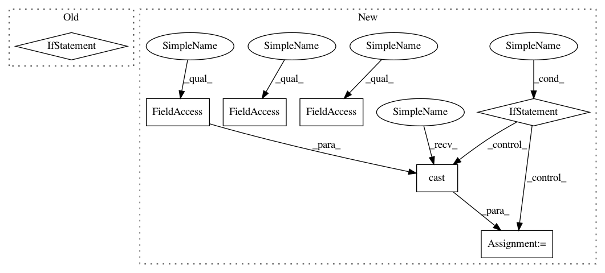

376feb9f02920deffd10ca2030056d5f5e5e3287,cleverhans/attacks.py,,fgm,#Any#Any#Any#Any#Any#Any#Any#Any#,386
Before Change
adv_x = x + scaled_grad
// If clipping is needed, reset all values outside of [clip_min, clip_max]
if (clip_min is not None) and (clip_max is not None):
adv_x = tf.clip_by_value(adv_x, clip_min, clip_max)
return adv_x
class ProjectedGradientDescent(Attack):
After Change
if (clip_min is not None) or (clip_max is not None):
// We don"t currently support one-sided clipping
assert clip_min is not None and clip_max is not None
if adv_x.dtype == tf.float32 and clip_min.dtype != tf.float32:
clip_min = tf.cast(clip_min, tf.float32)
if adv_x.dtype == tf.float32 and clip_max.dtype != tf.float32:
clip_max = tf.cast(clip_max, tf.float32)
adv_x = tf.clip_by_value(adv_x, clip_min, clip_max)
return adv_x
In pattern: SUPERPATTERN
Frequency: 3
Non-data size: 7
Instances
Project Name: tensorflow/cleverhans
Commit Name: 376feb9f02920deffd10ca2030056d5f5e5e3287
Time: 2018-10-19
Author: goodfellow@google.com
File Name: cleverhans/attacks.py
Class Name:
Method Name: fgm
Project Name: tensorflow/transform
Commit Name: 7ff2218b4af749860c6c44136e3a524c5c07b46e
Time: 2018-07-24
Author: tf-transform-dev@google.com
File Name: tensorflow_transform/analyzers.py
Class Name:
Method Name: max
Project Name: tensorflow/cleverhans
Commit Name: 376feb9f02920deffd10ca2030056d5f5e5e3287
Time: 2018-10-19
Author: goodfellow@google.com
File Name: cleverhans/attacks.py
Class Name:
Method Name: fgm
Project Name: rlworkgroup/garage
Commit Name: d67e08627198355a6d693807e15f8c74dfd23154
Time: 2020-05-15
Author: 44849486+maliesa96@users.noreply.github.com
File Name: src/garage/tf/q_functions/continuous_cnn_q_function.py
Class Name: ContinuousCNNQFunction
Method Name: _initialize